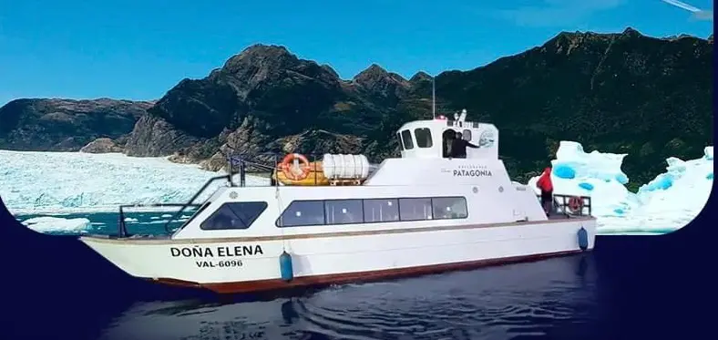
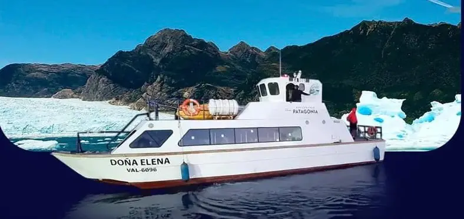

Descripción del Proyecto
Este proyecto consistió en la construcción de un trimarán para transporte de pasajeros, con una eslora de 15 metros, fabricado íntegramente en fibra de vidrio reforzada. La embarcación fue equipada con dos motores internos, sala de máquinas, cabina de pasajeros, cabina de mando y baños. Su diseño y equipamiento fueron desarrollados conforme a los requerimientos del cliente, con el objetivo de ofrecer servicios de transporte turístico en el sur de Chile, en destinos como la Laguna San Rafael.
Ficha Técnica del Proyecto
- Cliente: Explora Patagonia
- Ubicación: Laguna San Rafael, sur de Chile
- Duración: 18 meses
- Tipo de Proyecto: Construcción de trimarán turístico
- Servicios Aplicados: Construcción de casco y estructura, instalación de motores, sistema eléctrico, planos y trámites DGTM
- Materiales: Fibra de vidrio, resinas, acero, pintura marina, madera
Galería del Proyecto
 

Embarcaciones para turismo y transporte de pasajeros
El trimarán "Doña Helena", construido por CONAVRE, demuestra nuestra capacidad para entregar proyectos personalizados de alta complejidad técnica, diseñados para operar en zonas turísticas como la Laguna San Rafael.
Este tipo de embarcación es ideal para operadores en Quintero, Valparaíso y otras rutas costeras o lacustres de Chile.
¿Tienes un proyecto similar? Solicita tu cotización